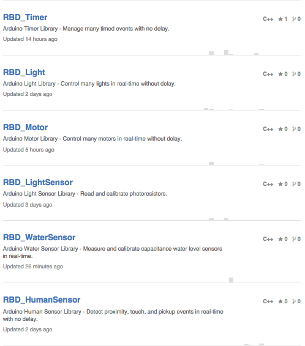

Program the real world
instead of running in a datacenter
with any
Arduino

- Connect really cheap and effective sensors to the Arduino
- Run everything at the same time with no delay
- Do it fast in microsecond response times
Bring it to the internet
while running in the real-world
with the
Raspberry Pi

- Stream live data to and from the Arduino
- Store and process lots of data efficiently
- Provide control from a single-page web app
Simple libraries that help
to solve all the "simple" problems
Standard big data patterns
let you stand on the shoulders of giants

1. Electronic Circuit Design
Start with the basics. Learn how electricity works, then wire basic electronic parts to sensors.
2. Real-Time Arduino Programming
Take the next step. Build a state-machine, then control many sensors at the same time.
3. Real-Time Web Programming
Finish the project. Store and process sensor data, then control everything from a website.